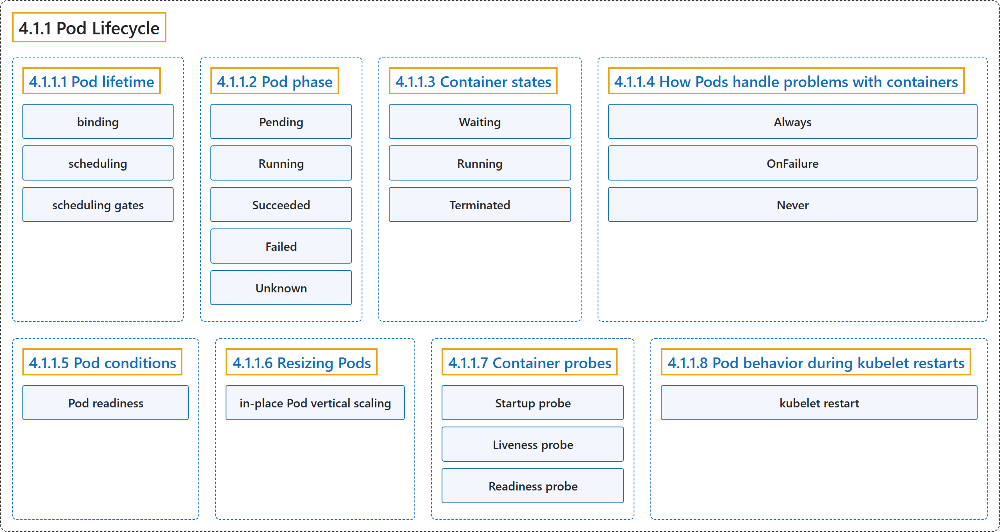

4.1.1 Pod Lifecycle
Classification

Glossary
| Term | Definition | 中文翻译 | Source |
|---|---|---|---|
| 4.1.1 Pod Lifecycle Pod 的生命周期 |
(context) "Pods follow a defined lifecycle," | （语境）Pod 遵循一个既定的生命周期， | The Kubernetes Authors, n.d., "Pod Lifecycle", para. 1 |
| 4.1.1.1 Pod lifetime Pod 的生存期 |
(No definition) | （无定义） | The Kubernetes Authors, n.d., "Pod lifetime" |
| binding 绑定 |
(context) "assigning a Pod to a specific node is called binding, and the process of selecting which node to use is called scheduling" | （语境）把 Pod 分配给特定节点称为绑定，而选择使用哪个节点的过程称为调度 | The Kubernetes Authors, n.d., "Pod lifetime", para. 4 |
| scheduling 调度 |
(context) "assigning a Pod to a specific node is called binding, and the process of selecting which node to use is called scheduling" | （语境）把 Pod 分配给特定节点称为绑定，而选择使用哪个节点的过程称为调度 | The Kubernetes Authors, n.d., "Pod lifetime", para. 4 |
| scheduling gates 调度门控 |
(context) "You can use Pod Scheduling Readiness to delay scheduling for a Pod until all its scheduling gates are removed." | （语境）你可以使用 Pod 调度就绪推迟 Pod 的调度，直到它的所有调度门控都被移除。 | The Kubernetes Authors, n.d., "Pod lifetime", para. 5 |
| 4.1.1.2 Pod phase Pod 阶段 |
(context) "A Pod's status field is a PodStatus object, which has a phase field." |
（语境）Pod 的 status 字段是一个 PodStatus 对象，其中有一个 phase 字段。 |
The Kubernetes Authors, n.d., "Pod phase", para. 1 |
| Pending Pending |
"The Pod has been accepted by the Kubernetes cluster, but one or more of the containers has not been set up and made ready to run." | Pod 已被 Kubernetes 集群接受，但有一个或多个容器尚未设置好并准备运行。 | The Kubernetes Authors, n.d., "Pod phase", para. 7 |
| Running Running |
"The Pod has been bound to a node, and all of the containers have been created." | Pod 已绑定到节点，并且所有容器都已创建。 | The Kubernetes Authors, n.d., "Pod phase", para. 8 |
| Succeeded Succeeded |
"All containers in the Pod have terminated in success, and will not be restarted." | Pod 中所有容器都已成功终止，并且不会再重启。 | The Kubernetes Authors, n.d., "Pod phase", para. 9 |
| Failed Failed |
"All containers in the Pod have terminated, and at least one container has terminated in failure." | Pod 中所有容器都已终止，并且至少有一个容器以失败告终。 | The Kubernetes Authors, n.d., "Pod phase", para. 10 |
| Unknown Unknown |
"For some reason the state of the Pod could not be obtained." | 由于某种原因，Pod 的状态无法获取。 | The Kubernetes Authors, n.d., "Pod phase", para. 11 |
| 4.1.1.3 Container states 容器状态 |
(context) "As well as the phase of the Pod overall, Kubernetes tracks the state of each container inside a Pod." | （语境）除了 Pod 整体的阶段，Kubernetes 还跟踪 Pod 内每个容器的状态。 | The Kubernetes Authors, n.d., "Container states", para. 1 |
| Waiting Waiting |
"If a container is not in either the Running or Terminated state, it is Waiting." |
如果容器既不处于 Running 也不处于 Terminated 状态，它就处于 Waiting 状态。 |
The Kubernetes Authors, n.d., "Waiting", para. 1 |
| Running Running |
"The Running status indicates that a container is executing without issues." |
Running 状态表示容器正在正常执行。 |
The Kubernetes Authors, n.d., "Running", para. 1 |
| Terminated Terminated |
"A container in the Terminated state began execution and then either ran to completion or failed for some reason." |
处于 Terminated 状态的容器开始执行，之后要么运行完成，要么因某种原因失败。 |
The Kubernetes Authors, n.d., "Terminated", para. 1 |
| 4.1.1.4 How Pods handle problems with containers Pod 如何处理容器问题 |
"Kubernetes manages container failures within Pods using a restartPolicy defined in the Pod spec." |
Kubernetes 处理 Pod 内的容器故障时，使用的是 Pod spec 中定义的 restartPolicy。 |
The Kubernetes Authors, n.d., "How Pods handle problems with containers", para. 1 |
| Always Always |
"Always: Automatically restarts the container after any termination." |
Always：自动重启容器，不论何种形式的终止。 |
The Kubernetes Authors, n.d., "Pod-level container restart policy", para. 3 |
| OnFailure OnFailure |
"OnFailure: Only restarts the container if it exits with an error (non-zero exit status)." |
OnFailure：仅重启容器，且仅当它出错退出（退出状态非零）时。 |
The Kubernetes Authors, n.d., "Pod-level container restart policy", para. 4 |
| Never Never |
"Never: Does not automatically restart the terminated container." |
Never：不自动重启该已终止的容器。 |
The Kubernetes Authors, n.d., "Pod-level container restart policy", para. 5 |
| 4.1.1.5 Pod conditions Pod 状况 |
(No definition) | （无定义） | The Kubernetes Authors, n.d., "Pod conditions" |
| Pod readiness Pod 就绪 |
(context) "Your application can inject extra feedback or signals into PodStatus: Pod readiness." | （语境）你的应用可以向 PodStatus 注入额外的反馈或信号：Pod 就绪。 | The Kubernetes Authors, n.d., "Pod readiness", para. 1 |
| 4.1.1.6 Resizing Pods 调整 Pod 大小 |
(No definition) | （无定义） | The Kubernetes Authors, n.d., "Resizing Pods" |
| in-place Pod vertical scaling 原地 Pod 垂直扩缩 |
(context) "This is also called in-place Pod vertical scaling." | （语境）这也称为原地 Pod 垂直扩缩。 | The Kubernetes Authors, n.d., "In-place Pod resize", para. 1 |
| 4.1.1.7 Container probes 容器探针 |
"Kubernetes lets you define probes to continuously monitor the health of containers in a Pod." | Kubernetes 让你定义探针，持续监控 Pod 中容器的健康状况。 | The Kubernetes Authors, n.d., "Container probes", para. 1 |
| Startup probe 启动探针 |
"Startup probes verify whether the application within a container is started." | 启动探针验证容器内的应用是否已启动。 | The Kubernetes Authors, n.d., "Startup probe", para. 1 |
| Liveness probe 存活探针 |
"Liveness probes determine when to restart a container." | 存活探针决定何时重启容器。 | The Kubernetes Authors, n.d., "Liveness probe", para. 1 |
| Readiness probe 就绪探针 |
"Readiness probes determine when a container is ready to accept traffic." | 就绪探针决定容器何时准备好接收流量。 | The Kubernetes Authors, n.d., "Readiness probe", para. 1 |
| 4.1.1.8 Pod behavior during kubelet restarts kubelet 重启期间的 Pod 行为 |
(No definition) | （无定义） | The Kubernetes Authors, n.d., "Pod behavior during kubelet restarts" |
| kubelet restart kubelet 重启 |
(context) "in other words the condition has not transitioned from true to false, Kubernetes detects this a kubelet restart" | （语境）也就是说该状况没有从 true 变为 false，Kubernetes 会把这种情况检测为一次 kubelet 重启 | The Kubernetes Authors, n.d., "Detection of kubelet restarts", para. 3 |
References
The Kubernetes Authors. (n.d.). Pod Lifecycle. Kubernetes Documentation. Retrieved October 31, 2026, from https://kubernetes.io/docs/concepts/workloads/pods/pod-lifecycle/